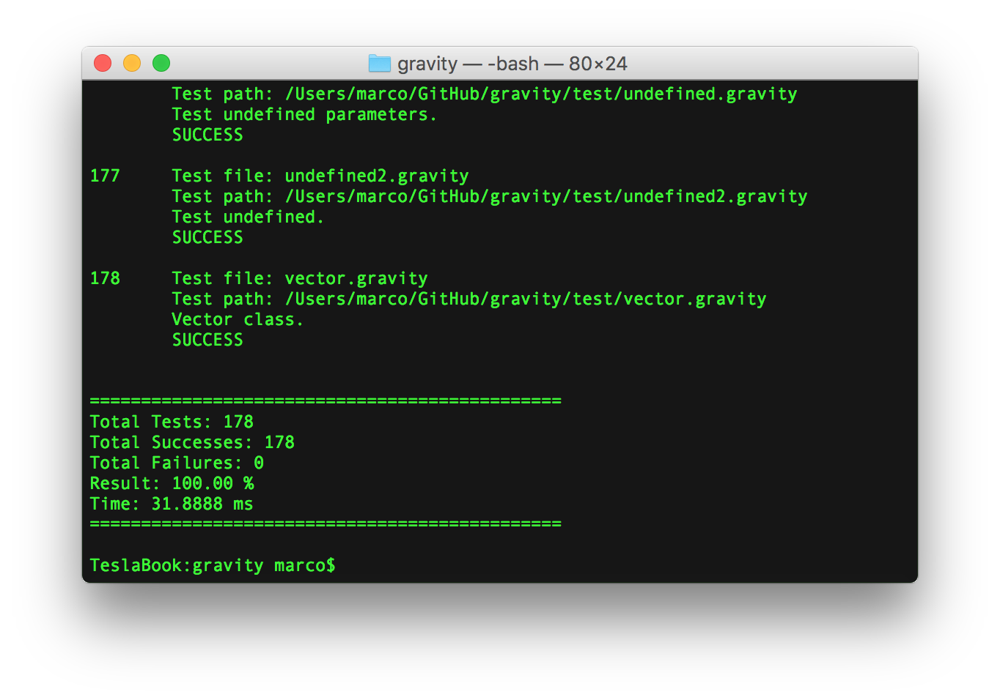

Getting started
Install
To install Gravity, simply execute the commands given below. It should make two executables: the compiler itself and test runner.
git clone https://github.com/marcobambini/gravity.git
cd gravity
make
If you want to access the gravity compiler globally just add it to your PATH!
You can also use the Xcode project to create the gravity or unittest executables.
Configure your editor
Programming is way more enjoyable when you have the right tools! That's why we equipped several code editors with Gravity support! Just click on your favourite editor and configure it accordingly:
Command line
To view all possible flags you can run the command below:
./gravity --help
To compile a gravity file to a exec.json executable:
./gravity -c myfile.gravity -o exec.json
To execute a precompiled json executable file:
./gravity -x exec.json
To directly execute a gravity file (without first serializing it to json):
./gravity myfile.gravity
Unit Tests
You can run unit tests by providing a path to a folder containing all tests:
./unittest path_to_test_folder
You should obtain an output like: 
Hello World
A simple Hello World code in Gravity looks like
func main() {
System.print("Hello World!")
}